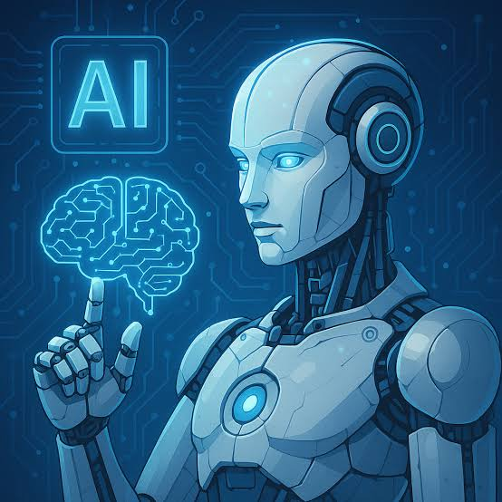
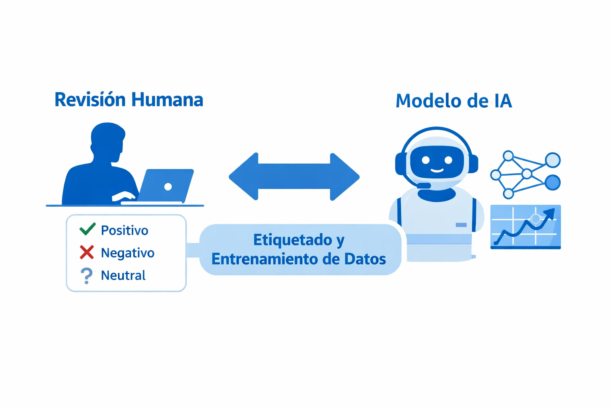

💬
Asistentes conversacionales
ChatGPT, Gemini o Claude responden preguntas, explican temas y ayudan a redactar.
En el CBTis No. 260 exploramos cómo la IA aprende, qué problemas resuelve y cómo usarla de forma responsable para prepararnos para los retos de hoy y del futuro.

La Inteligencia Artificial (IA) es la rama de la informática que desarrolla sistemas capaces de realizar tareas que normalmente requieren inteligencia humana: aprender, razonar, reconocer patrones, comprender el lenguaje y tomar decisiones.
Hoy está en nuestros teléfonos, en los buscadores, en las plataformas de video y música, en los hospitales y en las fábricas. Entender cómo funciona nos permite aprovecharla con criterio y no solo consumirla.

Entrenar un modelo se parece a estudiar con ejemplos resueltos:
ChatGPT, Gemini o Claude responden preguntas, explican temas y ayudan a redactar.
Crean ilustraciones y fotografías a partir de una descripción escrita.
Convierten texto y voz entre idiomas casi en tiempo real.
Spotify o YouTube sugieren contenido según tus gustos.
Permite entrenar un modelo de imágenes, sonidos o poses sin programar.
Mapas que calculan la ruta más rápida según el tráfico.
Realidad: procesa datos y patrones; no tiene conciencia ni emociones.
Realidad: puede fallar e incluso inventar datos con total seguridad.
Realidad: transforma tareas y crea nuevos perfiles; exige adaptarse y aprender.
Realidad: hoy existen herramientas accesibles para empezar a crear con IA.
No para empezar: puedes experimentar con herramientas visuales. Programar abre más posibilidades.
Evita enviar información personal, contraseñas o fotos privadas a cualquier servicio.
Es un apoyo; el acompañamiento humano y el criterio siguen siendo insustituibles.
En la sección Reconocimiento IA de este sitio y entrenando tu propio modelo.
Cada sección de la barra de navegación profundiza en un aspecto de la IA.
Definición, tipos y la historia de la IA.
15 conceptos clave en español e inglés.
Dónde usamos IA todos los días.
Beneficios, riesgos y ética.
Cómo cambia la forma de aprender.
Prueba un modelo entrenado en Teachable Machine.